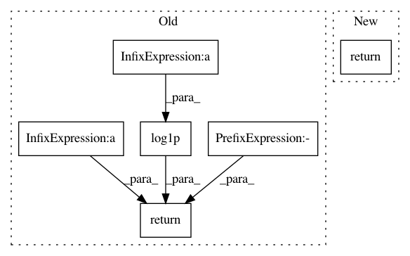

89916ad724ae88ebb4c1af3d65919b87b318f180,pymc3/distributions/continuous.py,Lognormal,logcdf,#Lognormal#Any#,1895
Before Change
sigma = self.sigma
z = zvalue(tt.log(value), mu=mu, sigma=sigma)
return tt.switch(
tt.le(value, 0),
-np.inf,
tt.switch(
tt.lt(z, -1.0),
tt.log(tt.erfcx(-z / tt.sqrt(2.0)) / 2.0) - tt.sqr(z) / 2,
tt.log1p(-tt.erfc(z / tt.sqrt(2.0)) / 2.0),
),
)
class StudentT(Continuous):
r
After Change
sigma = self.sigma
tau = self.tau
return bound(
normal_lcdf(mu, sigma, tt.log(value)),
0 < value,
0 < tau,
)
class StudentT(Continuous):
r
In pattern: SUPERPATTERN
Frequency: 3
Non-data size: 6
Instances
Project Name: pymc-devs/pymc3
Commit Name: 89916ad724ae88ebb4c1af3d65919b87b318f180
Time: 2021-01-20
Author: 28983449+ricardoV94@users.noreply.github.com
File Name: pymc3/distributions/continuous.py
Class Name: Lognormal
Method Name: logcdf
Project Name: scipy/scipy
Commit Name: 2508ff2b9a7d0f0406c6f97603ed770f1e934569
Time: 2016-06-28
Author: pab@MP815.ffi.no
File Name: scipy/stats/_continuous_distns.py
Class Name: genextreme_gen
Method Name: _cdf
Project Name: scipy/scipy
Commit Name: 3a8fec3c3d161051d73dda324ed7f92c7fe2ed9a
Time: 2014-07-23
Author: evgeni@burovski.me
File Name: scipy/stats/_continuous_distns.py
Class Name: genpareto_gen
Method Name: _logpdf